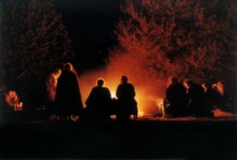

অন্ধকার রাত, চারিদিকে কিছুই দেখা যাচ্ছে না। একদল মানুষ চেষ্টা করছে আলো জ্বালানোর। যখন আলো জ্বলে উঠল আর চারপাশ আলোকিত করে তুলল এবং তারা সামনে যাবার জন্য তৈরি হতে নিল, তখনি হঠাৎ করে চারদিকের আলো নিভে গেল। তারা আবার অন্ধকারে ডুবে গেল।

প্রচণ্ড ঝড় হচ্ছে, মুষলধারে বৃষ্টি পড়ছে। এরই মধ্যে হঠাৎ হঠাৎ বিদ্যুৎ চমকিয়ে চারিদিক কিছুক্ষণের জন্য আলোকিত করে দিচ্ছে। এর মধ্যে একদল মানুষ পথ চলার চেষ্টা করছে। যখন বিদ্যুৎ চমকায়, সামনে কিছুটা পথ দেখা যায়, তখন মানুষগুলো সামনে এগোনোর চেষ্টা করে। তারপর আবার যখন চারিদিক অন্ধকার হয়ে যায়, তখন তারা চুপচাপ দাঁড়িয়ে থাকে। এরই মধ্যে হঠাৎ প্রচণ্ড শব্দে বাজ পড়ছে, আর মানুষগুলো কানে আঙুল ঠেসে দিয়ে মরার ভয়ে কাঁপছে।
উপরের দৃশ্যগুলো এসেছে সূরা বাকারার ১৭-২০ আয়াতে:
তাদের অবস্থা হলো একদল মানুষের মতো, যারা আগুন জ্বালাবার চেষ্টা করছে। যখনি আলো জ্বলে তাদের চারিদিক উজ্জ্বল করে দেয়, তখনি আল্লাহ تعالى তাদের সব আলো কেড়ে নিয়ে, তাদেরকে বিভিন্ন গভীরতার অন্ধকারে ছেড়ে দেন। তারা কিছুই দেখতে পায় না। তারা বধির, মূক এবং অন্ধ—তারা কখনও ফিরে আসবে না। অথবা, (আরেকটি উদাহরণ হলো)—আকাশ থেকে মুষল ধারে বৃষ্টি পড়ছে, চারিদিকে বিভিন্ন গভীরতার অন্ধকার, বিদ্যুৎ চমকাচ্ছে, বজ্রপাত হচ্ছে—একদল মানুষ পথ চলার চেষ্টা করছে। বজ্রপাতের প্রচণ্ড শব্দ শুনে তারা মৃত্যুর ভয়ে কানে আঙুল ঠেসে দেয়। কিন্তু যারা সত্যকে অস্বীকার করে—কাফির, তাদেরকে আল্লাহ تعالى ঠিকই ঘিরে রাখেন। বিদ্যুৎচমক তাদের দৃষ্টি প্রায় কেড়ে নেয়। যখনি তা আলো দেয়, তারা একটু সামনে এগোয়। আবার যখন চারিদিক অন্ধকার হয়ে যায়, তারা চুপচাপ দাঁড়িয়ে থাকে। যদি আল্লাহ চাইতেন, তিনি তাদের শোনা এবং দেখার ক্ষমতা কেড়ে নিতেন। আল্লাহ تعالى সবকিছুর উপরে পূর্ণ ক্ষমতাশীল। [বাকারাহ ১৭-২০]
প্রশ্ন হলো, এরা কারা?
এরা হলো মুনাফিকরা (ভন্ড), যাদের কথা আল্লাহ এর আগের আয়াতগুলোতে বলেছেন। তাদের কাছে প্রায়ই আল্লাহর تعالى বাণী (আলো) আসে। তারা সেটা নিয়ে অল্প একটু চিন্তা-ভাবনা করে ছেড়ে দেয়। আল্লাহর تعالى বাণী শুনে, বুঝে, নিজেদের জীবনে পরিবর্তন আনার কোনো চেষ্টা তাদের মধ্যে নেই। একারণেই আল্লাহ تعالى শাস্তি হিসেবে তাদের সত্যকে দেখে তা উপলব্ধি করার ক্ষমতা একসময় কেড়ে নেন। তাদেরকে তিনি বধির, মূক এবং অন্ধের সাথে তুলনা করেছেন। কারণ তাদের মস্তিস্কের সঠিক ব্যবহার না করতে করতে, তাদের সত্য শোনার ক্ষমতা নষ্ট হয়ে গেছে—তারা বধির। তারা নিজে থেকে মানুষকে ডেকে সত্যকে জানার কোনো চেষ্টা করে না—তারা মূক। তাদের চোখের সামনে সত্য থাকলেও, তারা সেটা দেখে না দেখার ভান করে—তারা অন্ধ। তাদের আর কোনোভাবেই ভালো হবার সম্ভাবনা নেই।[৩]
এখন অনেকে ভাবেন, আল্লাহ تعالى যদি তাদের দেখার ক্ষমতা কেড়ে নেন, তাহলে তারা আর কীভাবে ঠিক পথে আসবে? এটা কি অন্যায় না যে, আল্লাহ تعالى নিজেই তাদের দেখার ক্ষমতা কেড়ে নিচ্ছেন?
এই আয়াতটি নিয়ে অমুসলিমরা মহাখুশি। তারা এই আয়াতটি দিয়ে মুসলিমদেরকে প্রায়ই আক্রমণ করে, “দেখো! তোমাদের আল্লাহ কেমন! সে একদিকে মানুষকে ভালো হতে বলে, অন্যদিকে তার কথা না শুনলেই সে মানুষের দৃষ্টি কেড়ে নেয়, মানুষের ভালো হওয়ার সব সুযোগ বন্ধ করে দেয়।” এই ধরনের ক্রিটিকে মুসলিমরা ভাবতে পারেন—“তাইতো! আল্লাহ দেখি আসলেই মুনাফিকদের ভালো হওয়ার সব পথ বন্ধ করে দেন! তাহলে তারা আর কীভাবে ভালো হবে! এটা কেমন কথা হলো?”
আপনার মনে হতে পারে—আল্লাহ تعالى যদি মুনাফিকদের দৃষ্টি কেড়েই নেন, তাহলে তাদের দোষ কী? তারা তো ইচ্ছা করলেও ভালো হতে পারবে না। মুনাফিকরা তাদের মস্তিস্কের সঠিক ব্যবহার না করতে করতে, তাদের মস্তিস্কের সত্য-মিথ্যা পার্থক্য করার ক্ষমতা নষ্ট করে ফেলেছে।[৩] মানুষ যদি ছয় মাস তার পা ব্যবহার না করে, তার পায়ের পেশি শুকিয়ে যায়, তখন আর সে দাঁড়াতে পারে না। একই ভাবে মানুষ যদি মস্তিস্কের যথেষ্ট ব্যবহার না করে, তাহলে তার মস্তিস্ক ভোঁতা হয়ে যায়। মস্তিস্ক এমনভাবে তৈরি করা হয়েছে যে, মানুষ তা যত ব্যবহার করবে, তা তত শক্তিশালী হবে।[১৩৪] একারণেই আল্লাহ تعالى কু’রআনে শত শত উপমা, দৃশ্য, আগেকার দিনের ঘটনা, নানা ধরনের রহস্য দিয়ে রেখেছেন, যেন মানুষ কু’রআন বার বার পড়লে তার চিন্তাশক্তি বাড়ে, কল্পনা শক্তি প্রখর হয়, সত্য-মিথ্যা পার্থক্য করার ক্ষমতা বাড়ে।
মানুষ যখন তার সত্যকে উপলব্ধি করার ক্ষমতা ব্যবহার করে না, সত্য জানার পরেও সেটা মেনে নিয়ে নিজেকে পরিবর্তন করার চেষ্টা করে না, তখন ধীরে ধীরে তার নিজেকে পরিবর্তন করার ক্ষমতা একসময় নষ্ট হয়ে যায়। মানুষের মস্তিস্কের এই স্বাভাবিক প্রক্রিয়াটি আল্লাহরই تعالى সৃষ্টি। তিনি মানুষকে এভাবেই বানিয়েছেন।
একটা ব্যাপার মনে রাখতে হবে—আমরা যখন কোনো কিছু করি, আমরা আমাদের চিন্তার স্বাধীনতা ব্যবহার করে করার ইচ্ছা করি। কিন্তু প্রকৃত কাজটা হয় আল্লাহর تعالى তৈরি প্রাকৃতিক নিয়ম, বস্তু এবং শক্তি দিয়েই। যেমন: আমরা যখন খাই, আল্লাহই تعالى আমাদের খাওয়ান। কারণ খাওয়ার জন্য যেসব খাবার, হাত দিয়ে সেই খাবার তোলা, সেই হাতকে নিয়ন্ত্রণ করার জন্য পেশি, মস্তিস্ক, স্নায়ুতন্ত্র, খাবার খাওয়ার জন্য মুখ, চাবানোর জন্য দাঁত, হজমের জন্য পরিপাকতন্ত্র—সবকিছুই আল্লাহ تعالى তৈরি করে দিয়েছেন এবং সবকিছুই তিনি নিয়ন্ত্রণ করেন। আমরা শুধু ইচ্ছা করি, বাকি পুরোটা ‘করেন’ আল্লাহ تعالى, তাঁর নির্ধারিত প্রাকৃতিক নিয়ম দিয়ে। সুতরাং, এটা বলা যায় যে—আমরা যা করার ইচ্ছা করি, সেটা সম্পাদন করেন আল্লাহ تعالى।[২] সুতরাং কু’রআনের যেসব আয়াতে বলা হয় যে, আল্লাহ تعالى কাফির বা মুনাফিকদের দেখার, শোনার ক্ষমতা কেড়ে নেন, সেগুলোর প্রকৃত অর্থ হলো—মানুষ তার নিজের দোষের ফলাফল হিসেবে তাদের শোনার এবং দেখার ক্ষমতা হারিয়ে ফেলে এবং সেটা করেন আল্লাহ تعالى, তাদের জন্য শাস্তি হিসেবে, মহাবিশ্ব পরিচালনার পূর্ব-নির্ধারিত নিয়ম দিয়ে।
এই আয়াতগুলোর প্রথম অংশে আল্লাহ আমাদেরকে একধরনের মুনাফিকদের কথা বলেছেন, যারা চেষ্টা করে আলো জ্বালিয়ে মানুষকে পথ দেখানোর। তাদের আলো হয়তো অল্প কিছু সময়ের জন্য চারিদিকে আলোকিত করে। কিন্তু তারপরেই নেমে আসে অন্ধকার। এই মুনাফিকরা দেখেও বোঝে না যে, তারা কতো বড় ভুল করছে। সমসাময়িক কিছু উদাহরণ দেই—
যেমন ধরুন, আপনার এলাকার বিশিষ্ট সমাজসেবক চৌধুরী সাহেবের ধারণা—ইসলাম নারীদেরকে ঘরে বন্দি করে রেখে নারীদেরকে পশ্চাদপদ করে দিচ্ছে, ইসলামিক পোশাক পরার কারণে নারীদের তাদের কোনো অগ্রগতি হচ্ছে না। একারণে তিনি চেষ্টা করছেন নারীদের মাঝে ‘স্বনির্ভরতা’, ‘আধুনিকতা’-র আলো ছড়িয়ে দিতে। সেটা করতে গিয়ে তিনি তার এলাকার বিভিন্ন এনজিওর সাথে একসাথে হয়ে, এলাকার নারীদেরকে এমন সব ‘কর্মসংস্থান’ এনে দিচ্ছেন, যেগুলো করতে গিয়ে নারীদেরকে দিনরাত হাজারো মানুষের সাথে মিশে, বাজারে, রাস্তা-ঘাটে, বনে-বাদাড়ে ঘুরে বেড়াতে হচ্ছে। এধরনের কাজ করতে গিয়ে নারীরা ইসলামিক পোশাক ছেড়ে ‘আধুনিক’ স্বল্প বসনের দিকে ঝুঁকছে। শত শত পর পুরুষের সাথে মিশছে। যার ফলাফল—ব্যাপক হারে পরকীয়া; পরিবার ভেঙে যাচ্ছে, ছোট শিশুরা মায়ের আদর থেকে বঞ্চিত হয়ে সঠিক মানসিকতা নিয়ে বেড়ে উঠতে পারছে না[১৩৩], ঘরে অসুস্থ বাবা-মা, সন্তানদের দেখার কেউ নেই। এভাবে চৌধুরী সাহেব আলো জ্বালাবার চেষ্টা করছেন। অনেকের কাছে মনে হচ্ছে যে, সেই আলো চারিদিকে আলোকিত করে তুলছে, কিন্তু আসলে যা ঘটছে তা হলো—চারিদিকে এক ভয়ংকর অন্ধকার নেমে আসছে এবং মানুষ তার প্রকৃত অবস্থা উপলব্ধি করতে পারছে না এবং নিজেদেরকে সংশোধন করার ক্ষমতা হারিয়ে ফেলছে।
আরেকটি উদাহরণ হলো, ধরুন আপনার এলাকার কলেজের প্রফেসর জাফর সাহেব; যিনি মনে করেন ধর্ম হচ্ছে মানুষের বানানো কিছু ধারণা, বিজ্ঞান হচ্ছে সকল সমস্যার একমাত্র সমাধান। তিনি সবকিছুর মধ্যে বৈজ্ঞানিক ব্যাখ্যা খুঁজে বেড়ান এবং কোনো কিছুর বৈজ্ঞানিক ব্যাখ্যা দিতে না পারলে, সেটা আর তার কাছে গ্রহণযোগ্য হয় না। বিজ্ঞানের ধরাছোঁয়ার বাইরে কোনো কিছু থাকতে পারে—এটা তিনি মোটেও বিশ্বাস করেন না। তার মতে কোনো কিছুর যদি বৈজ্ঞানিক ব্যাখ্যা না থাকে, তাহলে সেটার কোনো অস্তিত্ব নেই। তার মতো মানুষরা মনে করে—একমাত্র বিজ্ঞান পারে মানুষকে অন্ধকার থেকে আলোতে নিয়ে আসতে। আমাদের সমাজ, দেশ, রাজনীতি, সবকিছুই হতে হবে বৈজ্ঞানিক পদ্ধতিতে পরিচালিত, এখানে ‘মানুষের বানানো’ ঐশী বাণীর কোনো জায়গা নেই।[২] এভাবে তারা নিজেদের বানানো নৈতিকতা থেকে একসময় —‘সকল ক্ষেত্রে নারী হবে পুরুষের সমান’, তারপর পাশ্চাত্যের —‘কে কিভাবে চলবে সেটা সম্পূর্ণ তার নিজের ব্যাপার’, এমনকি ‘ফ্রি সেক্স’ পর্যন্ত নানা ধরনের ‘আধুনিক মূল্যবোধ’ তৈরি করে সমাজ এবং দেশকে চরম ভাবে নৈতিক অবক্ষয়ের দিকে ঠেলে দেয়।
তারপর এই আয়াতগুলোর দ্বিতীয় অংশে এক ধরনের সুবিধাবাদী মুনাফিকদের উদাহরণ দেওয়া হয়েছে, যারা নিজেদেরকে মুসলিম মনে করে, কিন্তু তাদের ইসলাম নিয়ে সন্দেহ, দ্বিধার কোনো শেষ নেই। তারা শুধু ততটুকুই ইসলাম অনুসরণ করে, যতটুকু করলে তাদের কোনো ঝামেলা হয় না এবং সবসময় তারা ভয়ে ভয়ে থাকে—যদি তাদেরকে কেউ গোঁড়া মুসলিম ভেবে আক্রমণ করে, তাহলে? যদি তাদের ফাঁকিবাজির জন্য তাদের উপর আল্লাহর تعالى শাস্তি নেমে আসে, তাহলে?[৬] যখন একটু আলো পাওয়া যায়, ইসলাম মানা সহজ হয়ে যায়, তখন তারা ইসলামের দিকে আসে। কিন্তু যখন অন্ধকার হয়ে যায়, ইসলাম মানা কঠিন হয়ে যায়, তখন তারা ইসলাম থেকে সরে পড়ে।[৩]
এই ধরনের মুনাফিকদের অনেক উদাহরণ রয়েছে। যেমন: রমযান মাসে একধরনের মৌসুমি মুসলিমদের দেখা যায় যারা ৩০টা রোজা রাখে, কারণ ঘরে রান্না বন্ধ, রোজা না রাখলে লোকজনের সামনে লজ্জায় মুখ দেখানো যায় না। অন্যদিকে নামায পড়ার কোনো খবর নেই, কারণ পাঁচ ওয়াক্ত নামায পড়তে গেলে তো যথেষ্ট কষ্ট করতে হবে। তাছাড়া নামায না পড়লে তো কেউ খেয়াল করবে না। কিন্তু এদেরকে এনিয়ে কিছু বলতে গেলে তারা তেলে-বেগুনে জ্বলে উঠে কঠিন ঈমানের ঝাঁজ ছিটাবে। অথচ কোনোদিন তাদেরকে মাসজিদে এক ওয়াক্তের নামায পড়তেও দেখা যাবে না।
আরেকটি উদাহরণ হলো—কিছু মুনাফিকরা আছে যারা, যখন দিনকাল ভালো যায়, তখন ভালোই মুসলিম ভাব নিয়ে থাকে। কিন্তু দেশে যখনি কোনো দুর্যোগ দেখা দিবে, মুসলিমদের উপরে আক্রমণ হতে থাকবে, দেশে চরম মুসলিমবিদ্বেষী চক্রান্ত হতে থাকবে, টুপি দাঁড়ি ওয়ালা মানুষরা রাস্তাঘাটে, বিশ্ববিদ্যালয়ে আক্রমণের শিকার হতে থাকবে, তখন তারা খুব সাবধানে শেভ করে, চিপা প্যান্ট-শার্ট পড়ে, এমন এক ধরনের বেশভূষা নেবে যে, তাদেরকে দেখে অন্য কেউ আর ‘সত্যিকারের মুসলিম’ মনে করবে না এবং তাদের উপর আর কোনো ধরনের আক্রমণ হবে না। এধরনের অনেক রাতারাতি ভোল পাল্টানো মুসলিম আমরা আজকাল বাংলাদেশে অনেক দেখতে পাই। মুসলিম দেশগুলোতে যখন ইসলামের উপর আক্রমণ শুরু হয়, তখন এই ধরনের মুনাফিকদের আসল চেহারা বের হয়ে আসে।
এখানে একটি চিন্তা করার মত আয়াত রয়েছে:
… কিন্তু যারা সত্যকে অস্বীকার করে—কাফির, তাদেরকে আল্লাহ تعالى ঠিকই ঘিরে রাখেন। [বাকারাহ ১৯]
এতক্ষণ আল্লাহ تعالى মুনাফিকদের কথা বলছিলেন। কিন্তু হঠাৎ করে কাফিরদের কথা আসলো কেন? কারণ আল্লাহ تعالى জানেন তাদের অন্তরে আসলে কি আছে। যদি তাদের অন্তরে ইসলাম না থাকে, তাহলে যা বাকি থাকে তা হলো কুফরি। তারা জেনে শুনে আল্লাহর تعالى বাণীকে অস্বীকার করছে। তারা খুব ভালো করে জানে যে, আল্লাহ تعالى কুরআনে বলেছেন পাঁচ ওয়াক্ত নামায পড়তে, কিন্তু তারা পড়বে না। তারা খুব ভালো করে জানে আল্লাহ تعالى বলেছেন যাকাত দিতে, গরিবকে যথাসাধ্য সাহায্য করতে, কিন্তু তারা তা করবে না। নিজেদের চলাফেরা, কাজে কর্মে, আরাম আয়েশে কোনো সমস্যা সৃষ্টি হয়, কোনো বড় ত্যাগ স্বীকার করতে হয়—এরকম কোনো কাজ তারা করবে না। এধরনের মানুষদেরকে বাইরে থেকে দেখতে মুনাফিক মনে হতে পারে। কিন্তু আল্লাহ تعالى জানেন তাদের অনেকের ভেতরে আসলে যা আছে তা হলো কুফরি।
এই ধরনের মুনাফিক এবং কাফিরদেরকে আল্লাহ تعالى এক কঠিন সাবধান বাণী দিচ্ছেন:

{kind=link}
{kind=link}
মানব জাতি! তোমাদের প্রভুর প্রতি পূর্ণ দাসত্ব এবং ইবাদত কর, যিনি তোমাদেরকে এবং তোমাদের আগে যারা ছিলো তাদেরকে সৃষ্টি করেছেন, যাতে করে তোমরা তাঁর প্রতি সবসময় পূর্ণ সচেতন থাকতে পারো। [বাকারাহ ২১]
সবশেষে, এই আয়াতগুলোতে ব্যবহার করা হয়েছে এমন উল্লেখযোগ্য কিছু শব্দ নিয়ে বলি। যেমন আল্লাহ تعالى এই আয়াতগুলোতে ظُلُمَٰتٍ ব্যবহার করেছেন, যা একটি বহুবচন। এর অর্থ বিভিন্ন গভীরতার অন্ধকার।[৫] বহুবচন দিয়ে আল্লাহ تعالى আমাদেরকে শেখাচ্ছেন যে, সব অন্ধকার এক রকম নয়, এটি বিভিন্ন গভীরতার হয়। তেমনি সব মুনাফিক এক রকম নয়। মুনাফেকির বিভিন্ন স্তর এবং গভীরতা রয়েছে। মানুষের মন শুধুই সাদা অথবা কালো হয় না। মানুষের মনের ভেতরে বিভিন্ন গভীরতার কালো রয়েছে।
‘দৃষ্টির’ জন্য আল্লাহ تعالى এই আয়াতগুলোতে يُبْصِرُونَ ব্যবহার করেছেন। এটি শুধুই চোখে দেখা নয়, বরং দেখে উপলব্ধি করা। এই আয়াতগুলোতে আপনি ‘দেখা’, ‘শোনা’, ‘বলা’—এই শব্দগুলো দেখে, শুধুই চোখ দিয়ে দেখা, বা কান দিয়ে শোনা, বা মুখ দিয়ে বলা মনে করবেন না। এগুলো সবই মানুষের উপলব্ধি, অনুধাবন, কাজ করাকে নির্দেশ করে।[৫] যেমন এই আয়াতগুলোতে যখন বলা হয় যে, আল্লাহ্ تعالى দৃষ্টি কেড়ে নেন, তার মানে এই নয় যে, মানুষগুলো অন্ধ হয়ে যায়। বরং তাদের সত্য-মিথ্যা দেখে সেটা উপলব্ধি করার ক্ষমতা নষ্ট হয়ে যায়।
পুনশ্চ: আমার আর্টিকেলগুলো পড়তে গিয়ে যদি কখনও আপনার মনে হয়, “ও কি আমাকে নিয়েই এই আর্টিকেলটা লিখেছে? ও কি আমাকে এসব বলতে চাচ্ছে?”—তাহলে দুঃখিত। আমি কাউকে উদ্দেশ্য করে কোনো আর্টিকেল লিখি না। আপনার যদি এরকম মনে হয়, তাহলে আপনি নিজেকে নিয়ে আরেকবার ভেবে দেখুন: কেন আপনার এরকম মনে হচ্ছে।
সুত্র:
- [১] নওমান আলি খানের সূরা আল-বাকারাহ এর উপর লেকচার।
- [২] ম্যাসেজ অফ দা কু’রআন — মুহাম্মাদ আসাদ।
- [৩] তাফহিমুল কু’রআন — মাওলানা মাওদুদি।
- [৪] মা’রিফুল কু’রআন — মুফতি শাফি উসমানী।
- [৫] মুহাম্মাদ মোহার আলি — A Word for Word Meaning of The Quran
- [৬] সৈয়দ কুতব — In the Shade of the Quran
- [৭] তাদাব্বুরে কু’রআন – আমিন আহসান ইসলাহি।
- [৮] তাফসিরে তাওযীহুল কু’রআন — মুফতি তাক্বি উসমানী।
- [৯] বায়ান আল কু’রআন — ড: ইসরার আহমেদ।
- [১৩৩] মায়ের যথাযথ আদরের কারণে সন্তানরা মানসিকভাবে বেশি শক্ত হয়
- [১৩৪] মস্তিস্কের যত বেশি ব্যবহার হবে, তা তত শক্তিশালী হয়